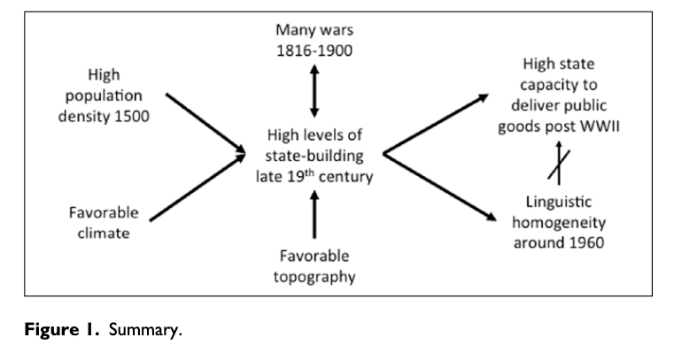

Andreas Wimmer | 族群多样性会影响公共物品供给吗？
原创 政文观止
政文观止Poliview
微信号 zhengwenguanzhi
功能介绍 从一群年轻人的视角出发，专业、专注、专解海内外比较政治经济研究的前沿佳作。
__发表于
#国家建构与国家发展 70 个
#比较政治学 121 个
#历史政治学 58 个
文献来源： Wimmer, A. (2016). Is diversity detrimental? Ethnic fractionalization, public goods provision, and the historical legacies of stateness. Comparative Political Studies , 49(11), 1407-1445.
作者简介： Andreas Wimmer，苏黎世大学社会人类学博士，现任哥伦比亚大学社会学与政治哲学Lieber教授。
族群多样性程度是一个社会最为基本的、最为重要的特征之一，其状况影响着国家与社会发展的方方面面。在社会科学研究中，族群多样性状况被用于解释社会的经济发展（Alesina, Devleeschauwer, Easterley, Kurlat, & Wacziarg, 2003; Alesina & La Ferrara, 2005; Montalvo & Reynal-Querol, 2005; Rodrik, 1999; Sala-i- Martin, Dopperlhoffer, & Miller, 2004），社会信任（Bjornskov, 2004; Glennerster et al., 2013; Knack & Keefer, 1997; Soroka, Banting, & Johnston, 2002），社会资本（Alesina & La Ferrara, 2000; Putnam, 2007），福利国家的发展（Alesina & Glaeser, 2004; also Desmet, Weber, & Rotuno-Ortin, 2010; for the most recent overview, see Gerring, Thacker, Lu, & Huang, 2015）。
在对族群多样性的长期关注下，本文主要考察其与公共物品供给之间的关系。Alesina等学者对这一问题曾做过研究，他们认为族群多样性与公共物品的低水平供给存在相关关系。首先，在族群多样性程度较高的国家，人们相对不愿意和其他族群的人分享公共产品，即公共物品供给和使用的 族群中心主义 。其次，不同族群可能在公共物品上的偏好不同，比如聚居在不同区域的族群会偏好将基础设施建设落实在本族群聚居区。偏好的不同增加了集体行动和协商的成本，这也即降低公共物品供给的 偏好异质性机制 。在更微观的研究中，已经有学者发现了族群多样性和公共物品供给之间的负相关关系，例如对美国城市的研究（Alesina et al., 1999; Goldin & Katz, 1999; Vigdor, 2004），对肯尼亚村落的研究（Miguel & Gugerty, 2005），对印度村落的研究（Banerjee, Lakshimi, & Somanathan, 2005），以及在国家层面上使用全球数据的研究（La Porta et al., 1999）。
与上述的研究的结论不同，本文的研究发现， 在关注了族群多样性与国家建设之间的内生关系后，族群多样性与公共物品供给之间并不存在显著的负相关关系。
族群多样性是外生变量吗？ ****
既有关于族群多样性与公共物品供给的研究存在一个隐含的前提假设，即族群多样性是与公共物品供给相独立的外生变量。但 从长期的历史发展来看，族群多样性水平并不是外生独立的，族群结构与公共物品供给能力都与国家形成的历史过程紧密相关。
以法国为例。法国王室自17世纪开始在全国范围内建设一套集权的公共行政体系。自18世纪以来，国家通过出资建设地方警察、邮政服务、福利院等方式提供了大量公共服务。在第三共和国时期，国家还进一步完善了公共教育体系和帮助贫困人口的医疗体系。国家能力的建设推动了公共物品的供给，而公共服务体系的完善也使得越来越少的人有意愿或能力使用法语之外的其他语言（如阿基坦语、普罗旺斯语等）。法国人口的同质化与其国家建设进程和公共服务体系的前期投入密切相关。坦桑尼亚的情况则与之相反。在坦桑尼亚历史上，没有任何政治实体在部族层面上实现过政治权力的集中。18世纪以来，桑给巴尔苏丹仅仅通过奴隶骑兵控制了海岸地区，而对内陆人口缺乏直接统治，更不要说提供公共服务了。在殖民时代，殖民者仅仅通过军事力量控制领土，却并未进行官僚体系和基础设施的建设。到今天，坦桑尼亚几乎是世界上族群- 语言异质性最高的地区之一。
国家形成的历史不仅塑造着族群结构，而且也影响着当代国家提供公共服务的水平。 在历史上，中国就形成了高效的行政体系，在今天，中国政府仍在高效地为中国人提供公共物品。刚果则与之相反，殖民者在撤离时几乎拿走了一切。后殖民时代的刚果既没有可用于进行公共服务的人力资源和基础设施，也没有组织公共服务的组织行为常规。
如果历史上的官僚能力和国家建设水平既影响着当代的族群多样性水平，又影响着公共物品供给水平。那在我们分析族群多样性程度和公共物品供给时，就不能简单认为两者是相互独立的外生变量。
实证分析
为了检验族群多样性、公共物品供给和历史上的国家建设之间的关系，作者进一步在实证层面展开了分析。
首先，作者对族群多样性与公共物品供给之间关系进行了检验。在公共物品供给上，作者主要使用了三个指标来测量，分别是成年人识字率、婴儿死亡率和每平方公里土地的铁路里程。这三者也是回归分析中的因变量。为了检验族群中心主义和偏好异质性机制是否存在，作者分别使用了被排斥族群人口占总人口比重和族群异质性作为回归的自变量。被排斥族群人口占总人口比重来自于Ethnic Power Realations数据集，被排斥族群即在政府中缺少政治代表的族群。族群异质性数据来自于苏联人类学者所制作的数据集，其测量的原理是在一个国家中随机挑选两个人，两人说同一种语言的概率。对历史上国家建设水平的衡量来自于Human Relations Area Files。这一数据集来自于人类学者所搜集的前殖民时代数千族群的经济、社会、政治和文化特征，并以国家为单位进行了集成。但这一数据仅涵盖了发展中地区，不含美国和欧洲。因此这一测量主要反映了非洲和亚洲国家前殖民时代的国家建设水平。除此之外，作者还添加了大量与之相关的控制变量。 回归结果显示，族群中心主义的解释并没有得到验证，虽然族群异质性和公共物品供给呈显著的负相关关系，但在加入了前殖民时代的国家建设水平变量后，这一组关系的显著性也消失了。 而历史上的国家建设水平这一变量则与除婴儿死亡率之外的其他因变量呈现显著的正相关关系。这一变化正验证了作者关于族群多样性内生于国家建设的理论。
接着，作者评估了族群异质性本身是否与历史上的国家建设水平相关。在这一阶段中，因变量变成了族群异质性，自变量变成了历史上的国家建设水平。历史上的战争数量等和因变量相关的控制变量被添加到模型中。 回归结果显示，在所有模型中，始终与因变量族群异质性有着显著正相关关系的只有历史上的国家建设水平这一变量。
最后，作者对什么因素影响着历史上的国家建设水平进行了检验。围绕国家形成这一古老而常新的命题，作者针对几个经典的假设进行了检验，重点检验的因素包括战争（1816-1900年的战争数量）、地理（山地占国土比重）、气候（1961-1990年平均气温）和人口密度（1500年人口密度）。与此同时作者还加入了族群异质性的数据，来检验族群异质性是否阻碍了历史上的国家形成。 回归结果显示，上述的几个因素都和历史上的国家建设水平呈正相关，但族群异质性却却并未与之呈现显著的相关关系。 作者在此还以博茨瓦纳和索马里作为对比论证。在1946年时，以茨瓦纳语为母语的博茨瓦纳人占全国总人口的55%，在2001年时，这一比例已经达到了78%。博茨瓦纳内部呈现的同质化的茨瓦纳人社会，其实是成功国家建设的结果而不是其原因。作为对比，索马里一直以来都以索马里人为主体，是一个相对同质化的社会，但其国家建设状况却并不如人意。
作者的实证结果也可以直接参见下图：

结论与讨论
讨论族群多样性和公共物品供给之间的关系，通过实地实验或社会调查数据这两大社会科学主流研究范式并不能让我们接近真相。将问题放在历史发展中，更有助于我们发现隐藏在国家建设中的变量内生性问题。 通过同化和暴力的措施，国家建设进程如何塑造着历史和当代的社会多样性，这种社会的多样性又如何影响着当代社会的发展和国家建设的进程。在历史发展和全球视野下，还有太多类似这样的重要问题有待我们进一步探索。
**
**
编译：赵德昊 审校：杨端程 编辑：康张城